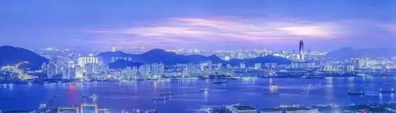
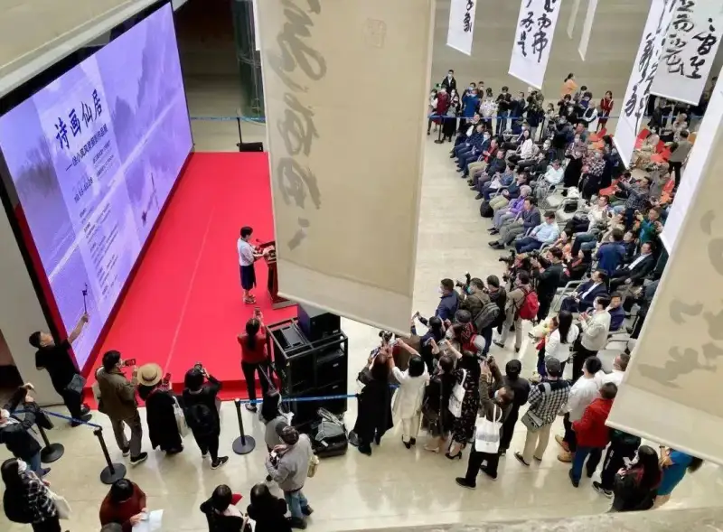
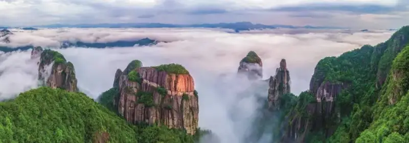
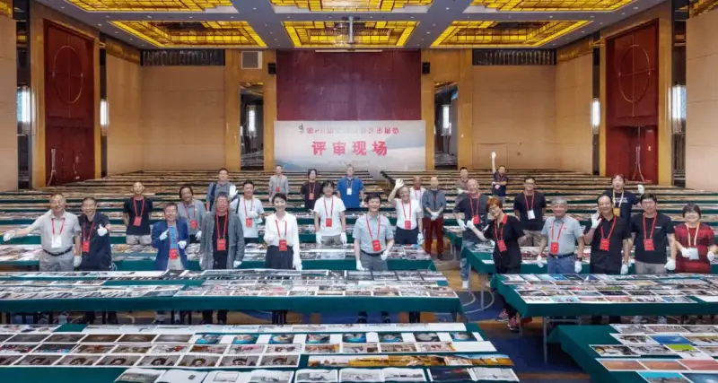
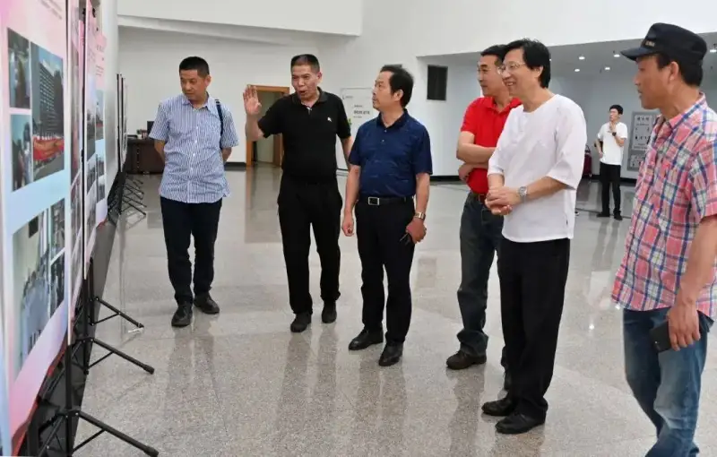
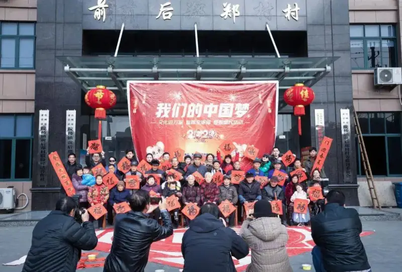
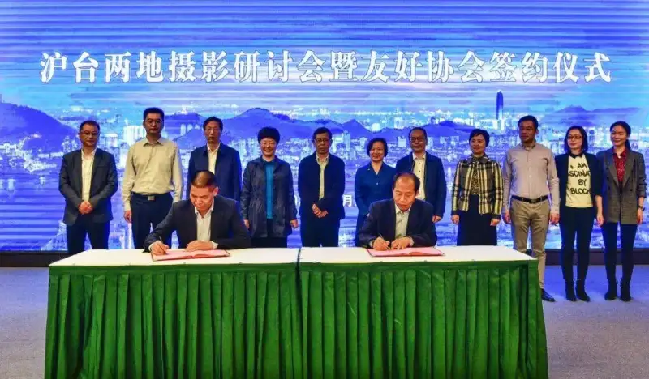
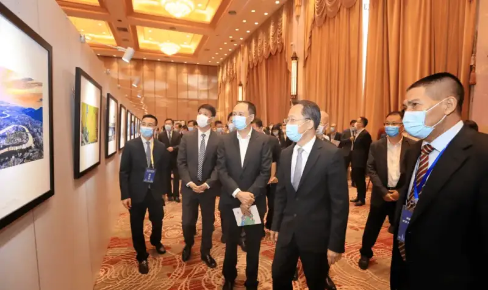
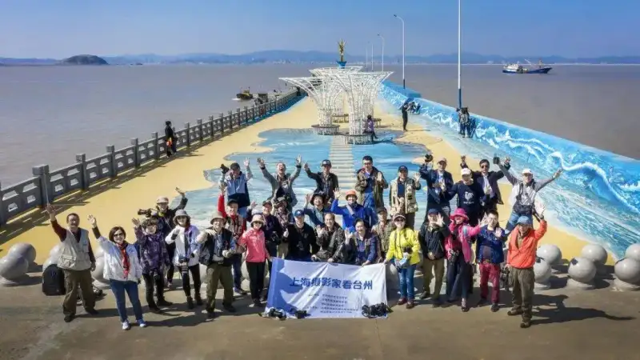
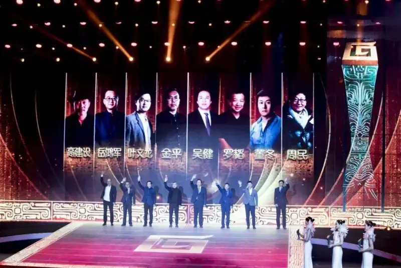

At the end of 2021, Taizhou won the title of Hometown of Chinese Photography. It became the sixth city nationwide to hold this honor. Taizhou has long valued photography. It keeps strengthening training, support for fine work, the blend of culture and tourism, and photography for the public. This built a solid base for the Hometown of Chinese Photography.

Mountains and Sea Taizhou, by Chu Fulong
1. Strengthen policy and funding, and build talent and fine work
Taizhou centers its work on producing fine work and talent. It has placed photography into the overall plan for the arts in the city, so that photography can grow fast.
First, it issued rules to support and reward fine artistic work.From 2017 to 2021, Taizhou rewarded more than 300 fine photographic works, supported 112 projects, and gave more than 6 million yuan in support and awards. Under policies such as the Thirty New Rules for Taizhou Talent, photographers who become national members or enter provincial talent programs receive awards of 30,000 to 100,000 yuan.
Colorful Xiaoruo, by Sun Jinbiao
Second, it expanded master studios and workshops.It built seven master studios for photographers such as Xu Xiaofeng, Ye Wenlong, Shen Liya, and Huang Jianjun, with over 3 million yuan invested. Through a mentor-and-apprentice system, master talks, member reviews, and exhibitions, it speeds up the growth of key photographers.

On October 15, 2021, the Poetic and Pictorial Xianju - Xu Xiaofeng Landscape Photography Show opened at the Zhejiang Art Museum
Third, it strengthened the training of photographic talent.It leads its members, holds regular training, sets up specialty committees, and grows group members. Today the Taizhou Photographers Association has more than 3,000 members, including over 300 national members, over 800 provincial members, and 30 group units with nearly 10,000 members.
Fourth, it supported the blend of photography, culture, and tourism.It made a policy to waive the first entry ticket for provincial-level or higher photography teams and individuals who shoot at Taizhou scenic areas during events. In 2021 alone, thousands of photographers benefited, which boosted tourism. Through the artistic eye of photography, it made spots such as Dachen Island, Tiantai Mountain, and Shenxianju popular, and it keeps adding cultural energy to scenic areas and villages.

Cloud Sea over Fanzheng Rock, by Li Jianwei
2. Build major shows and contests, and create a good photography climate
First, it holds large exhibitions.It pools the city's strength to host major national periodic shows and contests. It will soon hold the 28th National Photographic Art Exhibition and the first China Micro Video Exhibition. This will be the largest, highest-level, and most influential photography event in Taizhou's history.

On September 8, 2021, Li Ge, vice chair of the China Federation of Literary and Art Circles and chair of the Chinese Photographers Association, chaired the national show judging in Linhai, Taizhou
Second, it runs themed events.It uses the strengths of each county and city. Together with China Photonews and other units, it held 15 national themed contests, such as Thousand-Year Old City: Memories of Linhai, Source of Buddhism and Taoism: Divine Landscapes, and The Place Where Immortals Live: Chinese Landscape Painting City.

On June 11, 2020, the Taizhou United as One: Fighting the Epidemic touring photo show opened at the city government
Third, it holds exchange and discussion events.It hosts national, regional, and provincial exchange shows, contests, work meetings, and master visits to Taizhou. In the last five years, Taizhou held 8 national photography exchange events and 22 provincial ones.
Over the years, Taizhou produced many talents such as Sun Min, Chu Fulong, Xu Xiaofeng, Ye Wenlong, and Yan Jinsong. Since 2017, in the 26th, 27th, and 28th National Photographic Art Exhibitions, Taizhou photographers had 25 works selected, including 5 jury recommendations. The number of selected works ranks among the top of all prefecture-level cities.
Silver Waterfall Like Brocade, by Zhang Qingxiu
3. Promote integrated photography and build local event brands
Taizhou photography gained rich results through local themes, themed presentation, diverse teams, and individual style.
First, it built brand events.It holds the Taizhou Photography Biennale. Since 2010, it has run six editions and become a bright name card of Taizhou photography. Up to ten thousand people visit in a day. It drew wide attention from China Photonews and Zhejiang Daily, and won full recognition from the leadership of the Chinese Photographers Association.
On December 26, 2020, the 2020 Taizhou Photography Biennale opened at Taizhou Hehe Park. Yong He, vice chair of the Chinese Photographers Association, and Wang Xiaochuan, chair of the Zhejiang Photographers Association, attended.
Second, it strengthened the public program Photography into Ten Thousand Homes: Warm Family Portraits.For 10 years, it served groups such as migrant workers, reservoir settlers, low-income families, and old Party members before 1949. It shot free family and village portraits for nearly ten thousand households. Through programs such as You Order, We Serve, it ran over 2,000 public lectures, shows, and shoots in rural culture halls, community centers, and companies, serving millions of people. In May 2019, the Taizhou Art Volunteer Service Corps Photography Brigade and its county units were formally founded.

Warm Family Portraits. The program Photography into Ten Thousand Homes: Warm Family Portraits is the brand public program of Taizhou photographers. By 2022, it had shot New Year family portraits for the people for 12 straight years. Here, photography volunteers from Huangyan district shoot a family portrait for villagers. Photo by Ge Gening.
Third, it built a set of rural photography bases.It uses local photography resources to build photography towns and villages. Today it has one provincial Hometown of Photography (Yuhuan) and two national photography towns (Shitang in Wenling and Huaqiao in Sanmen). This year and next, Taizhou will build more city-level photography towns and model villages.
On August 22, 2020, Zheng Gengsheng, Party secretary of the Chinese Photographers Association, and Wang Xiaochuan, chair of the Zhejiang Photographers Association, inspected the Hometown of Chinese Photography work in Taizhou
4. Strengthen regional cooperation and widen exchange abroad
It strengthens exchange and cooperation with photography at home and abroad, deepens ties with sister cities, and explores a photography alliance, to raise Taizhou's influence and name in national photography.

On November 19, 2020, the Shanghai-Taizhou photography seminar and sister-association signing was held at the Hudong Workers' Cultural Palace in Yangpu, Shanghai. Yong He, vice chair of the Chinese Photographers Association and chair of the Shanghai Photographers Association, and Wang Xiaochuan, chair of the Zhejiang Photographers Association, witnessed the event.
First, it strengthened art exchange with domestic sister cities.It deepened photography exchange with sister cities such as Chengdu, Alar, and Tonghua. The association tied with 13 city associations, including Shenzhen, and held over 20 exchange shows such as the Taizhou-Tonghua show and the I Love Zhejiang-Xinjiang Taizhou-Alar show.

On November 19, 2020, Li Yueqi, Party secretary of Taizhou, led guests at the Shanghai-Taizhou Week to visit the Shanghai Photographers See Taizhou show
Second, it strengthened ties with the Yangtze River Delta art alliance.Using the Yangtze River Delta art alliance, it makes Taizhou photography stronger, better, and more distinct. It deepened ties with cities such as Shanghai, Huangshan, and Suzhou, held the Shanghai Photographers See Taizhou show, and ran cross-province joint shoots.

From October 19 to 24, 2020, to link with greater Shanghai and join the Delta, the Taizhou Photographers Association brought 30 Shanghai photographers to shoot in Tiantai, Linhai, Xianju, Wenling, and Yuhuan
Third, it built an overseas exchange platform.It uses new art bodies such as Shangtufang and Jingjie Studio. Through international exchange shows, it pushes Taizhou photography onto the world stage. Ye Wenlong, a winner of the China Photographic Gold Statue Award, creates works in his New Oriental Landscape style. These works have shown in France, Italy, and the United States, to present the aesthetic spirit of Chinese Eastern culture to the world.

In November 2018, Ye Wenlong attended the 12th China Photographic Gold Statue Award ceremony